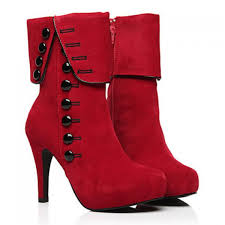

Hello from the other side I must've called a thousand times to tell you I'm sorry, for everything that I've done But when I call you never seem to be home. Versace, Versace, Medusa head on me like I'm 'luminati This is a gated community, please get the fuck off the property Rap must be changin' cause I'm at the top and ain't no one on top of me Niggas be wantin' a verse for a verse, but man that's not a swap to me Drownin' in compliments, pool in the backyard that look like Metropolis I think I'm sellin' a million first week, man I guess I'm a optimist Born in Toronto but sometimes I feel like Atlanta adopted us What the fuck is you talkin' 'bout? Saw this shit comin' like I had binoculars Boy, Versace, Versace, we stay at the mansion when we in Miami The pillows' Versace, the sheets are Versace, I just won a Grammy I've been so quiet, I got the world like "What the fuck is he plannin'?" Just make sure that you got a back up plan cause that shit might come in handy Started a label, the album is comin' September, I can take a few tears now and then and just let them out I’m not afraid to cry every once in a while Even though going on with you gone still upsets me There are days every now and again I pretend I’m OK But that’s not what gets me What hurts the most Was being so close And having so much to say And watching you walk away And never knowing What could have been And not seeing that loving you Is what I was tryin’ to do It’s hard to deal with the pain of losing you everywhere I go But I’m doin’ It It’s hard to force that smile when I see our old friends and I’m alone Still Harder Getting up, getting dressed, livin’ with this regret But I know if I could do it over I would trade give away all the words that I saved in my heart That I left unspoken What hurts the most Is being so close And having so much to say (much to say) And watching you walk away And never knowing What could have been And not seeing that lo Is what I was trying to do Not seeing that loving you That’s what I was try
 That don’t bother me I can take a few tears now and then and just let them out I’m not afraid to cry every once in a while Even though going on with you gone still upsets me There are days every now and again I pretend I’m OK But that’s not what gets me What hurts the most Was being so close And having so much to say And watching you walk away And never knowing What could have been And not seeing that loving you Is what I was tryin’ to do It’s hard to deal with the pain of losing you everywhere I go But I’m doin’ It It’s hard to force that smile when I see our old friends and I’m alone Still Harder Getting up, getting dressed, livin’ with this regret But I know if I could do it over I would trade give away all the words that I saved in my heart That I left unspoken What hurts the most Is being so close And having so much to say (much to say) And watching you walk away And never knowing What could have been And not seeing that lo Is what I was trying to do
at don’t bother me I can take a few tears now and then and just let them out I’m not afraid to cry every once in a while Even though going on with you gone still upsets me There are days every now and again I pretend I’m OK But that’s not what gets me What hurts the most Was being so close And having so much to say And watching you walk away And never knowing What could have been And not seeing that loving you Is what I was tryin’ to do It’s hard to deal with the pain of losing you everywhere I go But I’m doin’ It It’s hard to force that smile when I see our old friends and I’m alone Still Harder Getting up, getting dressed, livin’ with this regret But I know if I could do it over I would trade give away all the words that I saved in my heart That I left unspoken What hurts the most Is being so close And having so much to say (much to say) And watching you walk away And never knowing What could have been And not seeing that lo Is what I was trying to do Not seeing that loving you That’s what I was try